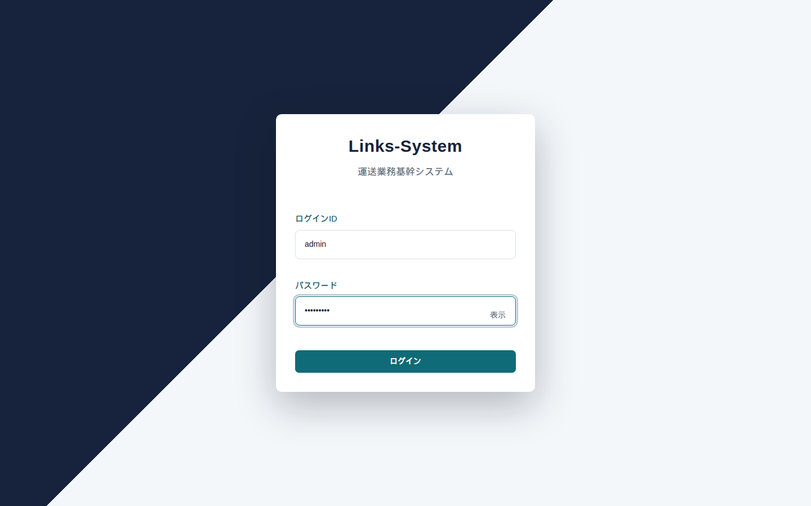
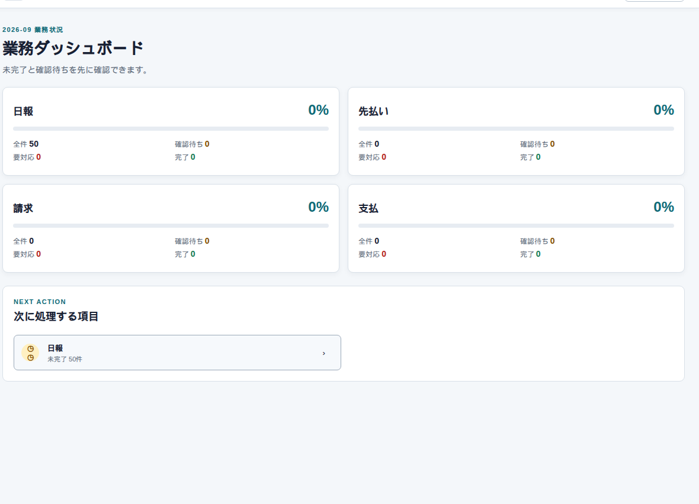

運送の仕事をまとめるシステム
Links-System の使い方
はじめに
現場の日報を入れると、そこから請求と支払がつながるように作っています。紙やExcelで別々に持っていた「いつ、誰が、何をしたか」と「いくらになるか」を、同じ案件の流れで見ます。
いちばん大事なのは日報です。メモではなく、請求と支払の根拠になります。同じ勤務でも、お客さま向けの単価とパートナー向けの単価は別です。画面に出る金額は、ファイルに書いてあった合計ではなく、案件の料金設定から計算し直した結果です。

入るところ
ブラウザで社内のアドレスを開くと、この画面になります。間違えると入れません。パスワードの目のアイコンは、入力中の文字を見せるだけです。
入れたら、次はホームです。左にメニュー、右に今月の進み具合が出ます。

画面の場所
仕事は左のメニューから選びます。日報は「日々の運用」の中です。権限によって、出ないメニューがあります（企業の人には日報は出ません）。
仕事の順番
だいたい、この順で進みます。途中を飛ばすと、次の画面に案件が出なかったり、請求の確定ができなかったりします。


マスタ（企業 → パートナー → 基本案件 → 個別案件 → 金額データ）が先です。案件が無い月は、日報の一覧が空になります。月次承認が終わるまで、請求・支払の本番確定には使いません。
いま読めるページ
いまは日報だけ、画面つきで書いてあります。ほかの機能は、同じ書き方で足していきます。
| 読みたいこと | ページ |
|---|---|
| 案件を探す・進捗を見る | 日報の一覧 |
| 時間や距離を入れる | 日報の入力 |
このHTMLは説明用です。実際の操作はアプリ側（社内LANなら http://<NASのIP>:8080）で行います。画面の数字は検証用で、実在のお客さまではありません。